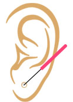
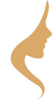
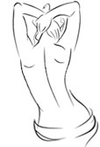
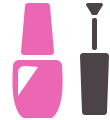
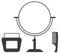

Hair
Your hair is extremely vulnerable to pollution and to help bring back the shine in them, we at Bubbles use only the best products. Everyday problems like dandruff, dry hair and hair fall are treated to give you a healthy and shiny hair that you have always dreamt of. And for those who want beautiful coloured hair, we use ammonia free hair-colour that keeps your hair healthy and also gives you the colour you wish for.
On request, our senior stylists will work on your hair and give you the hairstyle that best suits you.
Mani-Pedi
Your hands and feet deserve a special kind of care. We at Bubbles would like to give them the best of treatment to ensure they are soft, supple and presentable at all times. We pamper your hands and feet with a range pedicures and manicures using the best of products.
We use OPI and Skintruth products, the leading brands in the world to ensure your hands and feet get only the best.

Piercing
Need a second stud? Want to get your little one her first piercing? Bubbles offers you the most hygienic ear piercing process in the city. Sterilization and hygiene are our biggest priorities and we ensure that our instruments are well taken care of. In addition to regular piercing we also offer cartilage piercing. We use products from Studex, one of the leading brands in ear piercing instruments and products.

Face
Relax your skin with a wide range of facials and facial treatments and give your skin the break it deserves. At Bubbles, we offer a wide range of facials and face treatments to give your skin only the best. Our specials include Bio- white and Soothie facials, which give you a long lasting freshness. We also offer Eminence Organic Facials to those who would like to give their faces a more special experience.

Body
Restore the softness to your skin with our body wrap treatments. After a long and hectic week, Bubbles can help you unwind and recover in a soothing environment and under expert hands. We offer massage and body wraps that cleanse and replenish your skin. Among our most sought after wraps are our Chocolate and Eminence wraps, specially designed to give your body all the love and attention it desires.
Skin care
Radiant skin speaks volumes about you. At Bubbles, we consider skincare to be an art. Our skincare services include threading, waxing and bleaching performed by beauticians who put you at complete ease. These procedures require deftness and a soft touch, something our beauticians possess in abundance. Walk into our salon and experience our expertise for yourself.

Nail Care
Give your nails a little more sparkle with nail art by Bubbles. Come to us for beautiful and interesting nail art that is just right for special occasions. If you would like to flaunt longer nails, then we provide you acrylic nails from the world’s leading brand OPI.

Make-up
For those occasions when you want to go the extra mile and dazzle the company you keep, Bubbles offers a wide range of makeup services. We offer complete bridal packages and other makeup offerings. You can also book a session with our lead stylist, Tanuja and get an expert hand working to make you look radiant. We use Mac and other extremely high quality products to ensure that you get nothing but the best service.
Kerastase
At the Kérastase Scalp and Hair Institute at Bubbles, you will be personally attended to by a highly trained Kérastase Ambassador who will diagnose your scalp and hair concerns with a special camera. The dual lens of the camera magnifies your scalp 200 times and your hair 1000 times to minutely examine your scalp and hair condition. Based on the concerns identified, the Kérastase Ambassador recommends the most appropriate salon Ritual (hair care treatment) and home care products.
Indulge and pamper your scalp and hair with a 'Kérastase Ritual' - the ultimate hair care beauty experience. This unique multi-sensorial treatment combines precise dosages of the most innovative and advanced hair care formulations with therapeutic head-massage techniques that completely relax and rejuvenate you and your hair looks stunningly beautiful.